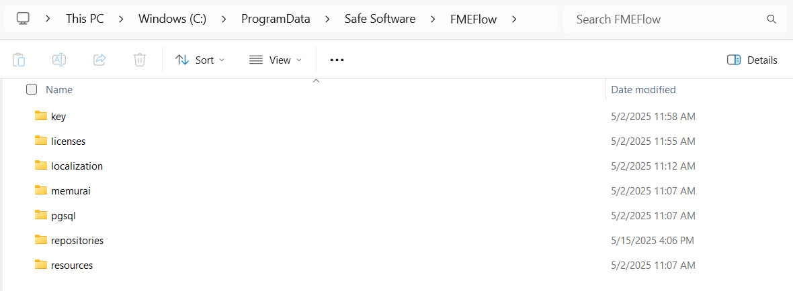

Learning Objectives
After completing this lesson, you’ll be able to:
- Understand and list the key components of FME Flow.
- Identify the purpose of different FME Flow components.
- Understand how workspaces are processed as jobs using engines.
- Understand the different types of engines.
FME Flow Components
FME Flow consists of several different components that work together to make it function. While it's unnecessary to have a deep understanding of the full architecture to deploy workflows on FME Flow, you will likely find it easier to maximize FME Flow functionality and troubleshoot workflows with some background knowledge.

If you are interested, the Getting Started with FME Flow Administration tutorial takes a deep dive into architecting FME Flow. You can choose from flexible deployment options for your organization’s needs, including both on-premise and cloud options.
Each FME Flow instance includes:
- Engines: run FME workspaces as job requests.
- Core: manages job requests, scheduling, and repository contents.
- Web Application Server: runs the web user interface and web services.
- Database and FME Flow System Share: store all information related to FME Flow.
All these components are necessary for FME Flow to function; however, deploying the components across different systems or in the cloud is flexible.
FME Flow Engines
FME Engines process and run FME workspaces as job requests. This is the same engine carrying out the same processing as FME Workbench. Each installation of FME Workbench includes one engine for job processing, while an FME Flow installation can possess multiple engines, allowing you to scale your FME Flow to meet all your needs.

Each FME Engine processes a single request (job) at a time. The FME Flow Core manages job requests and submits them to the engines to run the workspaces. Suppose an engine is unavailable, meaning all engines are busy running other workspaces. In that case, jobs will enter the queued state and wait for an engine to become available before processing the workspace.
You can scale FME Flow job processing by connecting additional FME Engines to the Flow Core. These FME Engines can run on the same machine as the Core, on separate servers within a distributed FME Flow environment, or as Remote Engines closer to your data. FME Engines are flexible to deploy wherever your data lives.
There are two types of engine licenses:
- Standard Engines: You purchase fixed licenses individually per engine. Each standard engine remains available and active throughout the license period.
- Dynamic Engines (CPU Usage): Engines licensed based on actual CPU processing time, measured in credits. Each credit corresponds to one hour of active engine CPU usage when the engine is actively processing jobs, allowing you to scale resources as needed efficiently.
Dynamic engines complement standard engines and help in scenarios involving:
- Variable or unpredictable workload spikes (busy workloads).
- Managing queued jobs by offloading excess demands from standard engines.
For more information on Dynamic Engines, read our article on Getting Started with Dynamic Engines.
FME Flow Core
The FME Flow Core manages job requests, scheduling, and repository contents.
When submitting jobs to engines to run, the FME Flow core controls how jobs run through transformation services, assigns the job to the correct queue, and communicates job expiry times.
To do this, the FME Flow Core manages:
- FME workspaces
- Job results
- Schedules
- Notifications
- Automations
- Repository contents (workspaces, custom formats, custom transformers, data)
- WebSocket server
- Licensing
- Engine queue
The FME Flow Core contains a Software Load Balancer (SLB) that distributes jobs to FME Engines.
Web Application Server
FME Flow Web Services enable you to run data integration workflows as web-accessible endpoints. These services allow external applications, systems, and users to trigger automated data processing tasks on-demand, seamlessly integrating data transformation capabilities into existing web applications and business processes.
FME Flow has several web services:
- Data Download
- Data Streaming
- Job Submitter
- KML Network Link
- Notification
- Data Upload
- REST API
- Token Authentication
- HTTP Basic Authentication
Some services (for example, Data Download) are “transformation” services that carry out data transformation, whereas others (for example, Data Upload) are non-transforming "utility" services.
FME Flow Database
The FME Flow Core uses a database to store all fundamental information related to FME Flow. Some database records stored by FME Flow include jobs, repositories, automation, users, and more. By default, FME Flow uses a PostgreSQL database server. However, you can configure it to use an Oracle or SQL Server database in distributed or fault-tolerant environments.
The FME Flow database is an internal application database not intended for direct access or storing source or destination data.
Express, fault-tolerant, and distributed deployment options are not covered in this course. For more information, see our documentation on Choosing a Deployment Architecture or Provide a Database Server.
FME Flow System Share
Although it's not a running service, the FME Flow System Share is a file storage location for user-accessible data and resources. The FME Flow System Share stores workspaces, source data, log files, and other essential data relating to FME Flow, like encryption keys and licenses.
